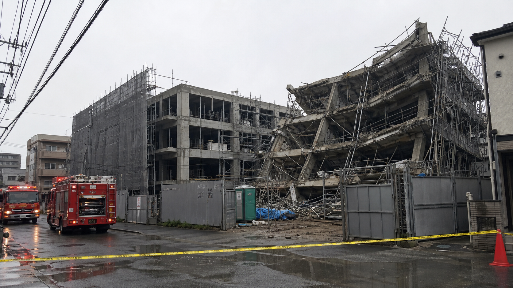

速報
建設中のジャルダン代々木下原、東棟が一部倒壊 契約者から不安の声
H!
Hyahoo!?ニュース編集部取材：社会部・地域取材班

前夜、世田渋谷区本形町二丁目で建設中のマンション「ジャルダン代々木下原」で、東棟の一部が倒壊した。消防などによると、作業時間外で、けが人は確認されていない。
現場では東側の基礎部分に大きな損傷が確認され、地下工事部分にも雨水が流れ込んだ。区と事業者は工事を中断し、地盤や基礎の施工状況を調べている。
物件は2027年3月の竣工・引渡しを予定し、すでに分譲販売が進んでいた。契約者からは「入居に合わせて今の住まいを売る手続きを進めている。説明がないままでは、この先どうすればよいか分からない」「ローンや転居の予定を組み直せず、行き場がない」といった不満と不安の声が上がっている。
東湾都市開発は、工事と販売を停止したうえで契約者へ個別に説明するとしている。倒壊の原因や工事再開の見通しは明らかにしていない。